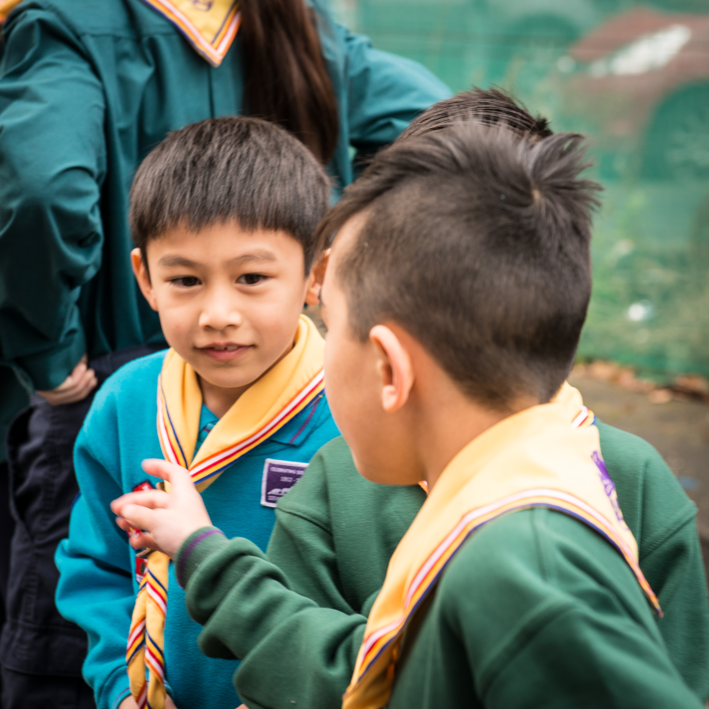
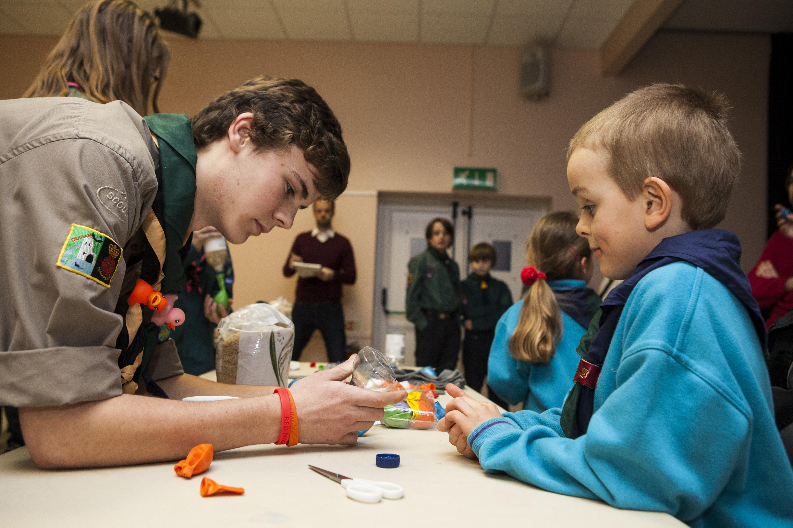

I lead the Beavers program at 4th East Grinstead, and I'd like to share why it's a great opportunity for children aged 6 to 8. Our program offers a fun and enriching experience for kids, with weekly meetings on Thursdays from 5:10 to 6:10. We focus on engaging activities, games, and adventures, all while building important life skills and encouraging teamwork. Additionally, we offer special events like the Beaver sleepover, providing a chance for children to bond, create lasting memories, and learn valuable skills in a friendly atmosphere.
Our team of leaders and young leaders are dedicated mentors who guide kids through activities designed to help them earn badges representing valuable life lessons and skills. If you're a parent or guardian looking for a positive experience for your child, we welcome you to join us at Beavers. It's an opportunity that shapes confident, skilled, and responsible young individuals. Please find our join us page and fill the form in.
Kristina Parsons – Beaver Section Leader – Over 25 years at 4th East Grinstead

